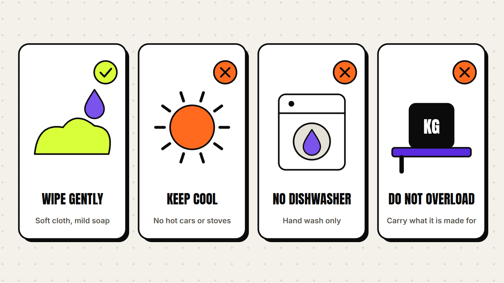
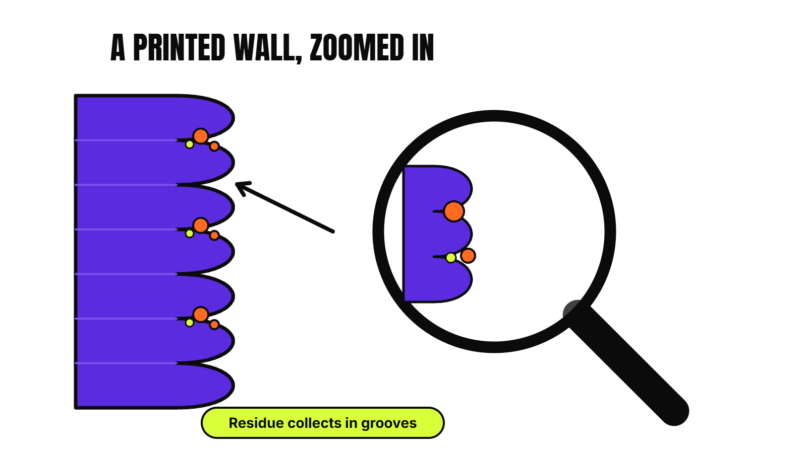

A printed piece can look good for years with very little care. It helps to know what the material dislikes: heat, harsh cleaners, heavy loads, and, in the kitchen, direct contact with food. This guide covers everyday care first and then explains why our kitchen range is labelled non-food-contact.
Hollow and layered parts can hold water inside. Turn them upside down and let them dry in a shaded, airy place.
Heat is the most common cause of a ruined print. PLA, used for much decor, starts to soften at roughly 55 to 60 °C. A parked car, a sunny windowsill, or a spot next to a stove or a hot appliance can reach temperatures that bend it. Resin pieces can discolour or become brittle after long exposure to sun.
For parts that must live outdoors or somewhere warm, choose the material for that place. PETG stands more warmth than PLA, and ASA is the usual choice for sunlight. Our material guide compares them.

Printed shades are decorative. Use only the bulb or LED type and size given for the product, prefer cool-running LEDs, and keep plastic well away from the heat of the bulb. Never use a printed part to carry or insulate mains wiring.
A non-food-contact item may live in your kitchen, but it is not meant to touch anything you will eat or drink without a barrier. An egg tray holds eggs in their shells. A spoon or knife holder stores utensils. Neither is a plate, container, cup, or cutting surface.

Coatings are sometimes suggested as a fix. Their suitability depends on the specific product, how well it covers every surface, and whether it stays intact with washing and wear. We do not offer our pieces as food-safe.
| Do | Do not |
|---|---|
| Hold whole eggs in their shells in an egg tray | Place cracked eggs or cooked food in it |
| Rest clean, dry utensils in a holder | Leave wet or dirty utensils pooling water |
| Wipe or hand wash, then dry fully | Put it in a dishwasher, oven, or microwave |
| Keep it away from flames and hot pans | Use it as a trivet or spoon rest beside a burner |
| Replace it if cracked or hard to clean | Store food or drink in any printed part |
Most of our pieces are made for display, storage, and organising, not for play. Small parts can be a choking hazard, and a broken piece can have sharp edges. Keep small prints out of reach of young children and pets, and do not let anyone chew on them.
Keep spare or seasonal pieces in a cool, dry cupboard. Do not stack heavy boxes on them, since steady pressure in warm weather can slowly distort thin walls. Wrap painted and resin items in soft cloth or paper.
Check printed items now and then, especially those that hold something. Replace a piece if you notice:
Printed parts do not last for ever, and the conditions around them matter more than their age. A shelf piece kept cool and dry may look the same for a long time, while the same piece beside a window can fade or distort.
A clean break in a decorative PLA or PETG part can often be joined with a small amount of suitable adhesive, following its safety instructions. Do not rely on a glued repair for anything that carries weight. If a load-bearing part cracks, replace it.
Tip: Keep your order number, and quote it if you ever need a matching replacement.
More short notes are on the care and safety page. If something arrived damaged or behaves unexpectedly, message the studio with a photo. You can browse the decor range or ask for a custom piece in a material that suits where it will be used.